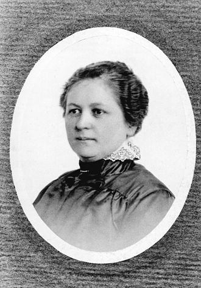
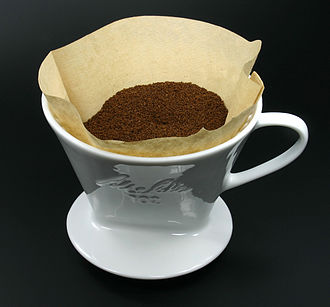

Melitta Bentz
Amalie Auguste Melitta Bentz (31 ianuarie 1873 - 29 iunie 1950), născută Amalie Auguste Melitta Liebscher , a fost o întreprinzătoare germană care a inventat sistemul de fabricare a filtrului de cafea din hârtie în 1908. Ea a fondat compania omologă Melitta , care încă funcționează sub control familial.
Date personale
Bentz s-a născut în Dresda . Tatăl ei era editor.
În calitate de gospodină , Bentz a descoperit că percolatoarele erau predispuse la consumul excesiv de cafea, mașinile de tip espresso la acea vreme aveau tendința de a lăsa motive în băutură, iar filtrele pentru pungi de lenjerie erau obositoare pentru a fi curățate. Ea a experimentat cu multe mijloace, dar a sfârșit folosind hârtie blotting din caietul de școala al fiului ei Willy și un vas de alamă perforat cu ajutorul unei unghii. Atunci când cafeaua lipsită de motive, mai puțin amară, a fost întâlnită cu entuziasm general, a decis să înființeze o afacere.
Kaiserliche Patentamt (Oficiul de Brevete Imperial) , i-a a acordat un brevet de la 20 iunie 1908, iar la data de 15 decembrie, compania a fost introdusă în registrul comercial cu 73 Pfennig ca „M. Bentz“. După ce au contractat un cositor pentru fabricarea dispozitivelor, au vândut 1.200 filtre de cafea la târgul din Leipzig din 1909 .
Soțul ei Hugo și fiii lor Horst și Willy au fost primii angajați ai noii companii. În 1910, compania a câștigat o medalie de aur la Expoziția Internațională de Sănătate și o medalie de argint la Saxon Innkeepers 'Association. Când a izbucnit Primul Război Mondial , metalele au fost rechizitionate pentru a fi utilizate în construcția Zeppelin , soțul ei a fost recrutat în România , hârtia a fost raționată, iar boabele de cafea au fost imposibil de importat din cauza blocajului britanic, perturbând afacerile normale. În această perioadă s-a sprijinit prin vânzarea de carton.
Extinderea continuă a făcut compania să se mute de mai multe ori în Dresda. Până în 1928, cererea pentru produsele lor era atât de mare încât cei 80 de lucrători trebuiau să lucreze într-un sistem cu dublă schimbare. Întrucât nu s-au găsit instalații de producție satisfăcătoare în Dresda, compania cu creștere rapidă s-a mutat în 1929 în Minden, în estul Westfalia . Până la acel moment au fost produse 100.000 de filtre.
Horst a preluat compania, acum „Bentz & Sohn”, în 1930. Bentz a transferat participația majoritară din Melitta-Werke Aktiengesellschaft la Horst și Willy în 1932, dar a ținut o mână în afacere, asigurându-se că angajații erau îngrijiți, oferind Bonusuri de Crăciun, creșterea zilelor de vacanță de la 6 la 15 zile pe an și reducerea săptămânii de lucru la 5 zile. Ea a promovat sistemul companiei „Melitta Aid”, un fond social pentru angajații companiei.
După izbucnirea celui de-al Doilea Război Mondial , producția s-a oprit și compania a primit ordin să producă mărfuri pentru a ajuta efortul de război. La sfârșitul războiului, muncitorii s-au mutat pentru o perioadă în vechile fabrici, în cazărmi, chiar în pub-uri, pentru că porțiunile supraviețuitoare ale fabricii principale fuseseră rechiziționate ca administrație provizorie pentru trupele aliate, condiție care s-a menținut timp de doisprezece ani. Până în 1948, producția de filtre și hârtie se reluase, iar la moartea ei la Holzhausen la Porta Westfalica în 1950, evaluarea companiei ajunsese la 4,7 milioane de mărci Deutsche .


Un filtru de cafea Melitta